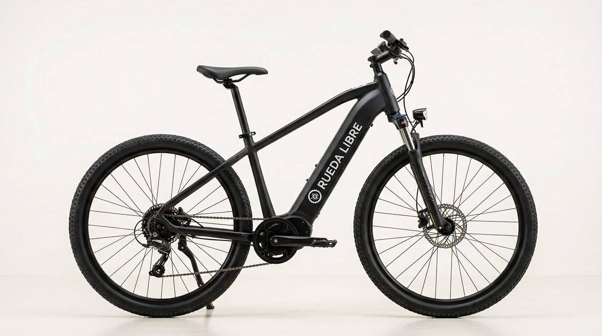
Alquiler de bicicletas
Ofrecemos bicicletas urbanas, de montaña y eléctricas para desplazarte por la ciudad y explorar senderos y rutas naturales.
RUEDA LIBRE
Bienvenido a Rueda Libre, tu mejor aliado para recorrer y descubrir Medellín sobre dos ruedas. Nos apasiona promover la movilidad sostenible, la aventura urbana y el turismo activo. Ya sea que busques una bicicleta para moverte por la ciudad, explorar sus parques y ciclorrutas, o unirte a un recorrido guiado, aquí encontrarás equipos de excelente calidad y la mejor atención para que tu experiencia sea inolvidable.
Reservar ahora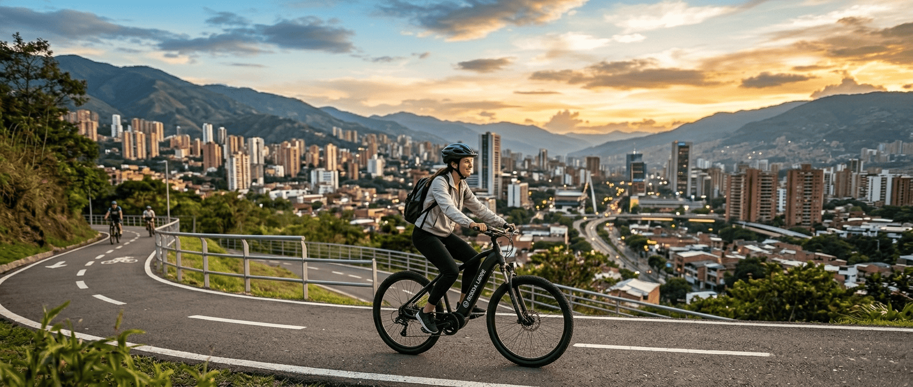
Conoce las opciones disponibles para explorar la ciudad a tu ritmo.

Ofrecemos bicicletas urbanas, de montaña y eléctricas para desplazarte por la ciudad y explorar senderos y rutas naturales.
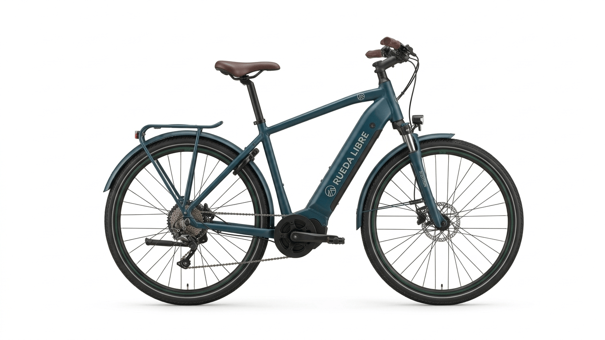
Recorre Medellín con asistencia eléctrica y disfruta tus trayectos con mayor comodidad y libertad.
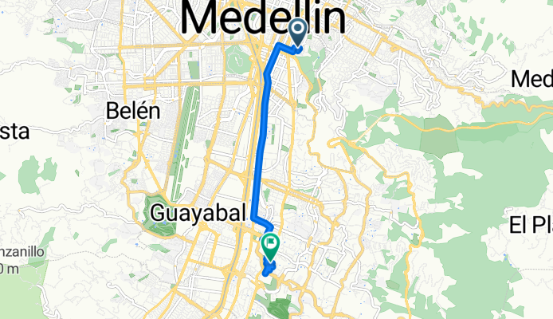
Únete a nuestras rutas guiadas y descubre Medellín de una manera única. Nuestros guías expertos te llevarán por los lugares más emblemáticos, compartiendo historias y secretos de la ciudad mientras pedaleas.
Somos un equipo apasionado por la movilidad sostenible y el turismo activo. Nuestra misión es facilitar el acceso a la bicicleta como medio de transporte y recreación en Medellín, promoviendo así un estilo de vida más saludable y ecológico.
Recorrido cultural por los puntos más emblemáticos, parques y plazas principales de Medellín.
Disfruta de la naturaleza y ciclorrutas conectando los parques lineales más hermosos.
Una ruta llena de aventura con ascensos y vistas panorámicas espectaculares de la ciudad.
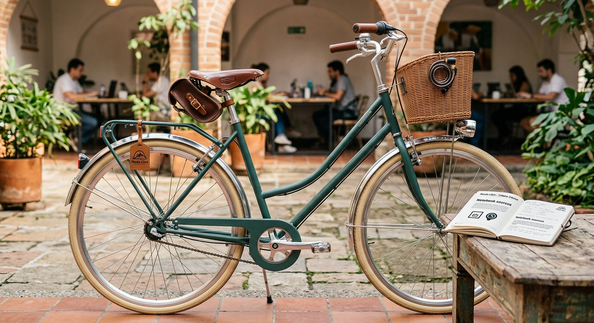
Cómoda y liviana para las ciclorrutas.
$10.000 / hora Reservar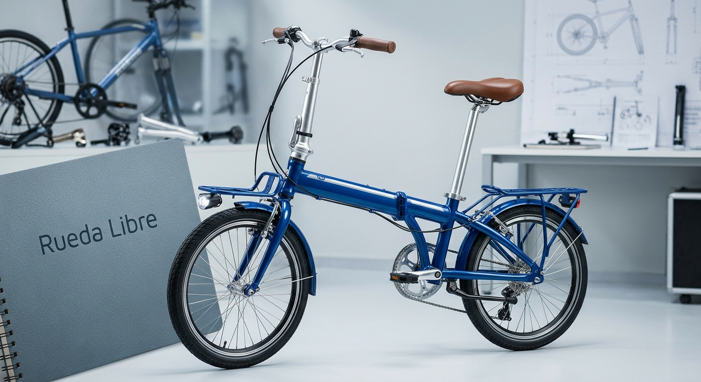
Se dobla en segundos; ideal para combinar con el metro.
$12.000 / hora Reservar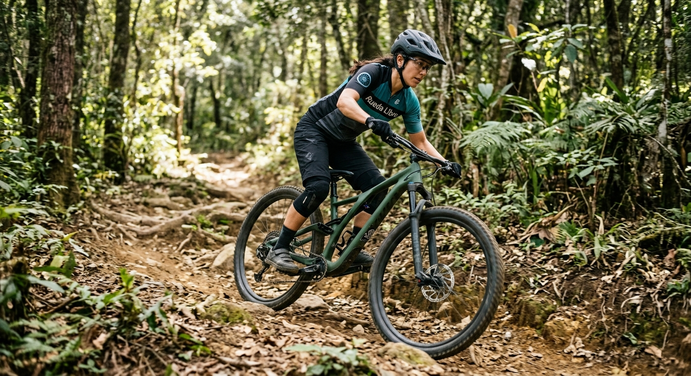
Suspensión delantera y 21 cambios para las subidas.
$15.000 / hora Reservar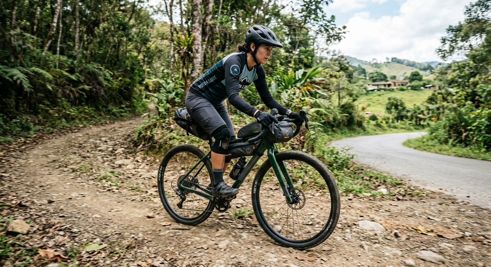
Para rutas mixtas de asfalto y destapado.
$18.000 / hora Reservar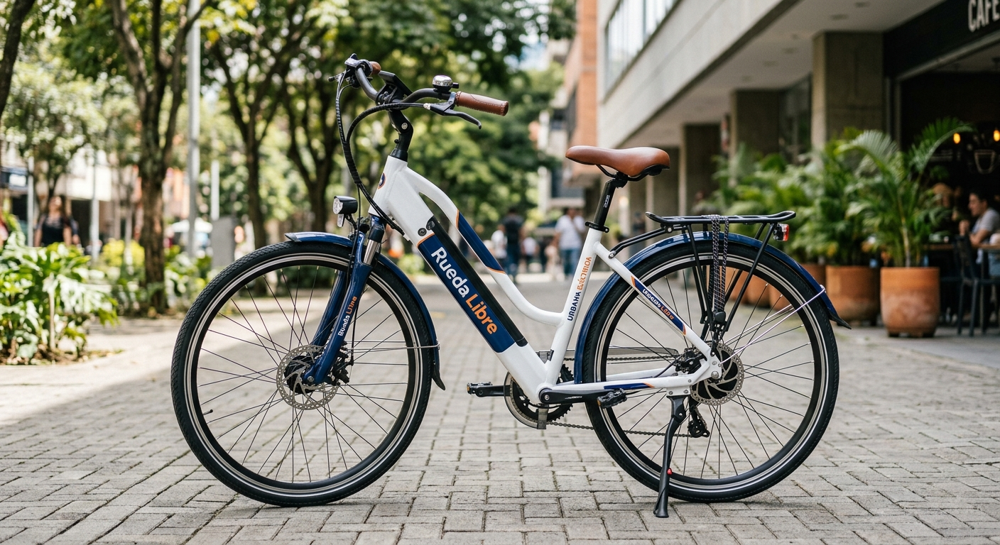
Asistencia eléctrica con 45 km de autonomía.
$25.000 / hora Reservar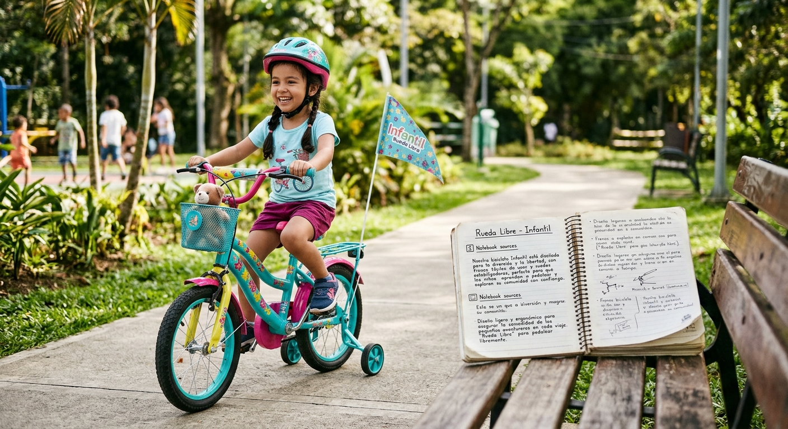
Para niños de 6 a 10 años.
$8.000 / hora Reservar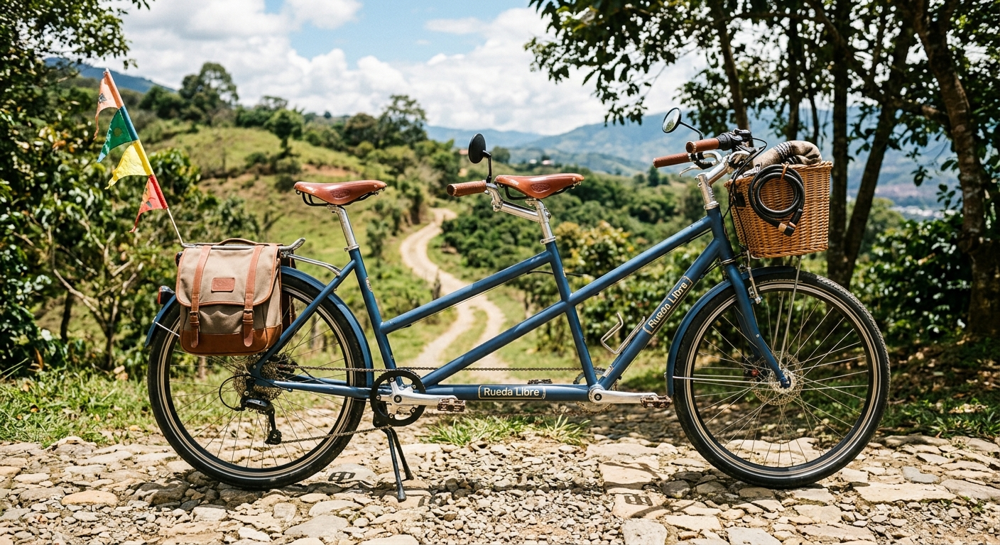
Para dos personas; perfecta para pasear en pareja.
$20.000 / hora Reservar